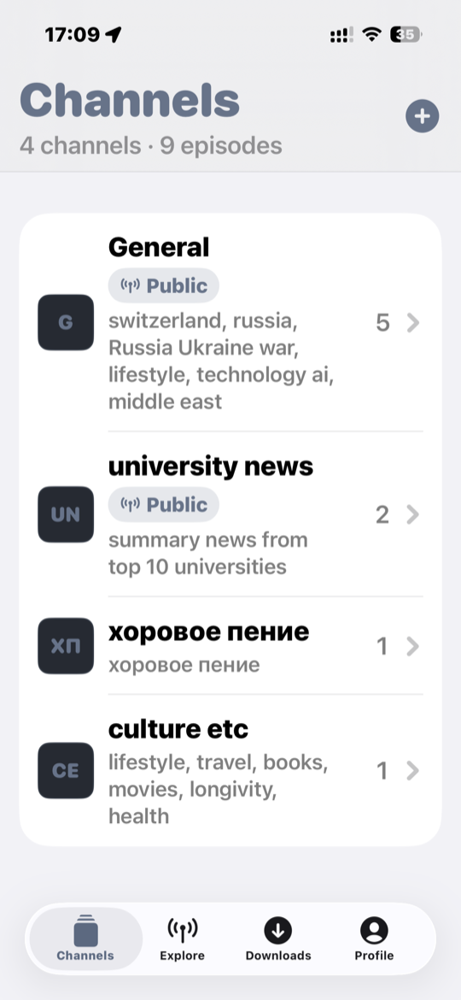
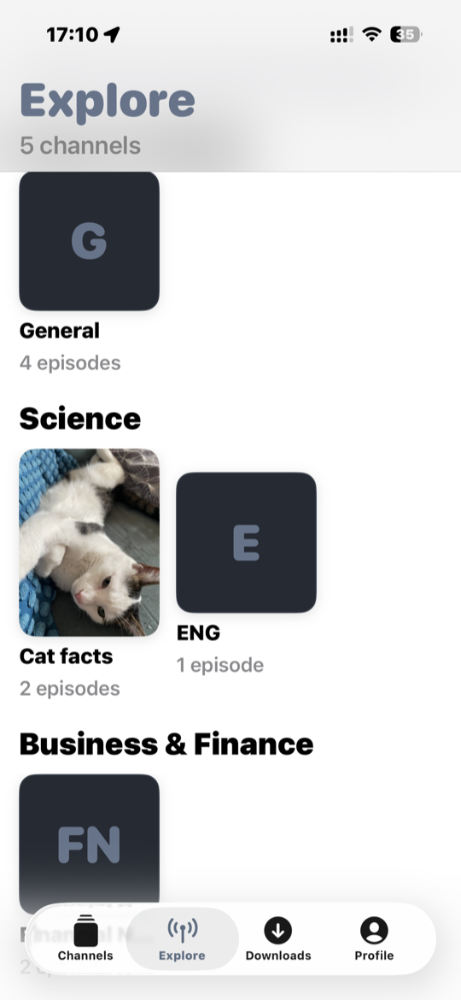
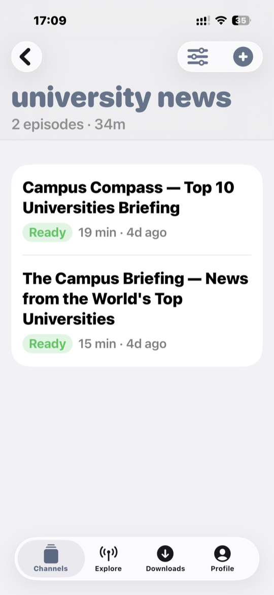
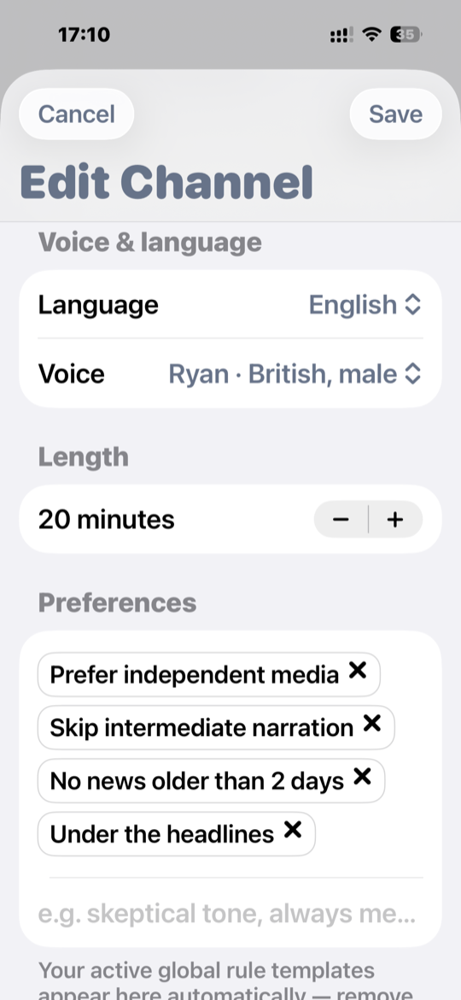
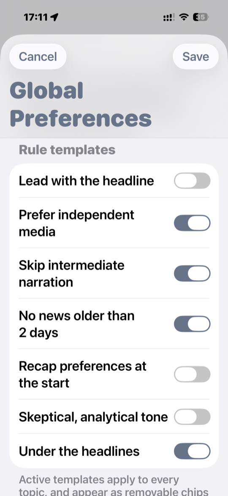
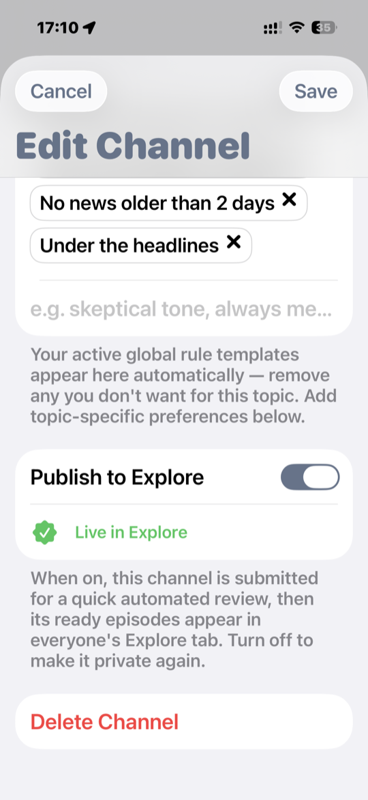
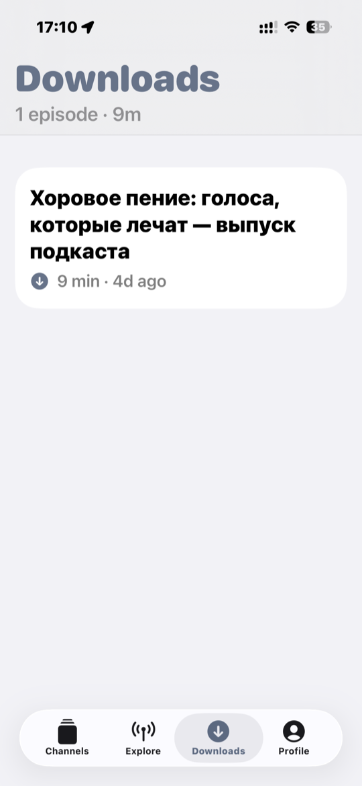
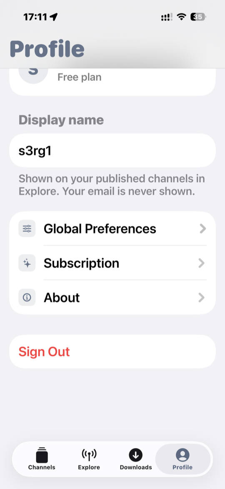

Your news, as a podcast.
damabot turns the topics, sources and voice you choose into personalized podcast episodes — generated for you, ready whenever you are.
See how it works → In private beta on TestFlight. iPhone, iOS 17+.
Built around what you want to hear
Create a channel for any subject, tune how it sounds, and let damabot write and narrate fresh episodes.
Your own channels
Make a channel for any subject — world news, tech, your hometown, a hobby — and pick the sources it should follow.
Generated for you
Each episode is researched, written and narrated on demand, in the length and style you set.
Your voice & language
Choose the language and a natural-sounding voice. Add house-style rules that apply to every episode.
Explore & discover
Publish a channel for others, or browse channels people share in Explore — organized by category.
Listen offline
Download episodes to your device and play them anywhere, with no connection needed.
Private by design
No ads, no tracking. Sign in with Apple, and your email is never shown to anyone.
A quick look
From your channels to the full episode list, Explore, and fine-grained preferences.






